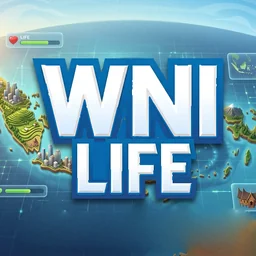
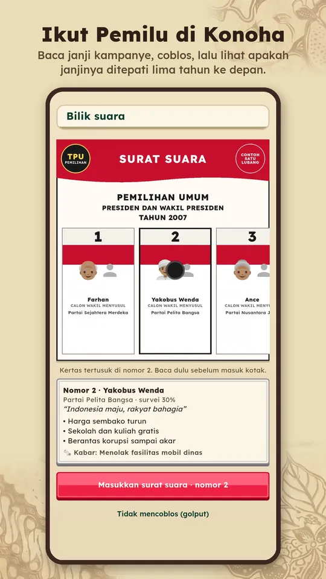
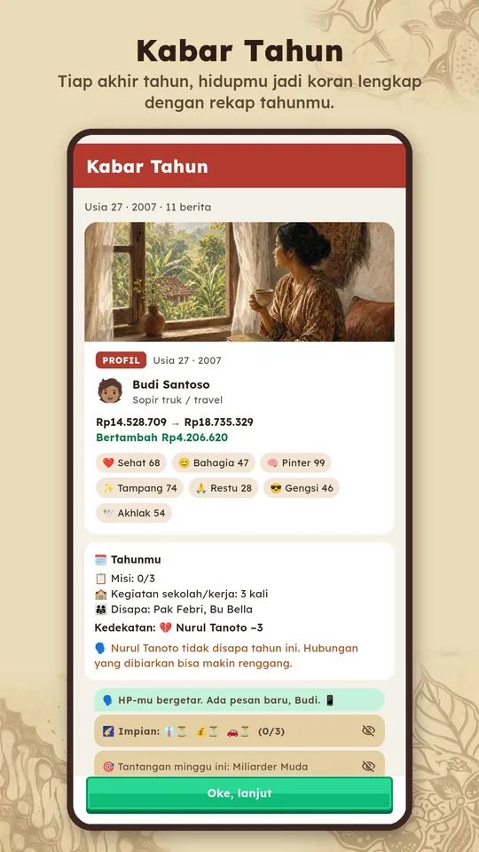

WNI Life Simulator
aldyrains · Simulasi · Android
Simulasi hidup WNI dari lahir sampai tua. Setiap tahun kamu melempar Dadu Takdir: hasilnya bisa rezeki nomplok, musibah, atau kejadian sehari-hari yang bikin geleng-geleng kepala.
- Gabung grup penguji: groups.google.com/g/wnilife-penguji (pakai akun Google yang sama dengan di HP).
- Buka halaman tes WNI Life, ketuk Jadi penguji.
- Pasang dari Google Play, lalu main dan kirim masukan.
Seperti apa main WNI Life?






Hidup yang tidak bisa kamu pilih, tapi bisa kamu jalani
Lahir di mana, diundi
Keluarga, kondisi ekonomi, dan daerah asal diundi. Ada yang lahir di kota besar, ada yang di desa. Dari situ, pilihanmu yang menentukan nasib.
Ribuan kejadian satir
Jualan keripik, arisan, ormas minta "uang keamanan", banjir, mudik, pinjol, sampai viral di media sosial. Setiap pilihan ada akibatnya.
Sekolah, kampus, karir
Ujian pilihan ganda sungguhan, masuk kampus, lalu cari kerja dari puluhan profesi. Naik jabatan, kena PHK, atau buka usaha.
Keluarga dan generasi
Pacaran, menikah, punya anak dan cucu, pelihara hewan. Saat hidupmu berakhir, lanjutkan cerita sebagai anakmu.
Pemilu dan bencana
Baca janji kampanye, coblos, lihat hasil hitung cepat. Waspadai peringatan dini cuaca dan bencana per provinsi.
Koleksi dan mini game
Tawar harga di pasar, karaoke, ujian, dan lainnya. Puluhan ending, gelar, dan prestasi untuk dikoleksi.
Sekilas
- Platform
- Android 7.0+
- Bahasa
- Indonesia
- Harga
- Gratis, ada iklan
- Pembelian opsional
- Paket Sultan (bebas iklan)
- Akun
- Tidak perlu
- Usia
- 18+
Game ini fiksi dan satire untuk pemain dewasa (18+). Semua tokoh, partai, merek, dan lembaga di dalamnya rekaan. Ada simulasi judi plesetan yang hanya memakai uang di dalam game, tanpa uang sungguhan dan tanpa hadiah nyata, justru untuk menunjukkan bahwa judi selalu merugikan. Game ini tidak berafiliasi dengan pemerintah atau lembaga mana pun.
Kebijakan privasi · Dukungan: aldyrains30@gmail.com